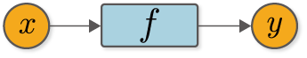

The code implemented in the previous step
[1]:
import numpy as np
class Variable:
def __init__(self, data):
self.data = data
Step 2: Function to create a variable¶
In the previous step, the Variable class can now be used as a “box”. However, as it stands now, it is “just a box”. We need a mechanism to turn that “just a box” into a “magic box”. The key to this is the “function”. In this step, we will consider about function.
2.1 What is a function?¶
What is a function? A function is, to put it a little more stiffly, a set of correspondences from one variable to another. As a concrete example, let’s consider the function \(f(x) = x^2\) that computes the square. In that case, if \(y = f(x)\), then the relationship between the variable \(y\) and \(x\) is determined by the function \(f\). That is, the relation “\(y\) is the square of \(x\)” is determined by the function \(f\).
Thus, a function has a role in determining the correspondence between variables. A visual representation of the relationship between variables and functions is shown in Figure 2-1.

Figure 2-1 Graph showing the relationship between variables and functions
The relationship between the variables \(x\) and \(y\) and the function \(f\) has been visualized by Figure 2-1. In this way, the diagram showing the calculation by the nodes and arrows represented by ○ and □ is called a “computational graph”. In this document, variables are indicated by orange circles and functions are indicated by light blue squares.
WARNING
When you think of “graphs,” you may think of diagrams such as bar charts and pie charts. However, in the field of computer science, a “graph” refers to a data structure (and a diagram representing that structure) that consists of nodes and edges.
2.2 Function class implementation¶
Now, let’s consider the function represented by Figures 1-3 from a programming perspective. Concretely speaking, we assume that the variables \(x\) and \(y\) are the Variable instances that we just implemented, and implement the function \(f\) that can process them as a Function class. There are two things to note here.
A method to implement in
Functionclass is to take aVariableinstance as input and aVariableinstance as output.The actual data of a
Variableinstance exists in the instance variabledata.
Noting these two points, the Function class can be implemented as follows.
[2]:
class Function:
def __call__(self, input):
x = input.data # Get data
y = x ** 2 # Actual calculations
output = Variable(y) # Return as Variable
return output
Here, we implement the __call__ method, as shown above. The __call__ method takes input as an argument, which assumes that a Variable instance is given. Therefore, the actual data exists in input.data. After retrieving the data, it performs the desired calculation - here, the squared calculation - and returns the result in a “box” of Variable.
NOTE
The call method is a special Python method. Once this method is defined, if f = Function(), we can call the f(…) to call the call method when f = Function(…).
2.3 Using Function class¶
Let’s use the Function class. Here, we try to enter the x of the Variable instance into the f of the Function instance.
[3]:
x = Variable(np.array(10))
f = Function()
y = f(x)
print(type(y)) # Get the type of an object using type()
print(y.data)
<class '__main__.Variable'>
100
As described above, we were able to use Variable and Function in conjunction. The execution results show that the type of y is Variable and that the data is stored in y.data.
Now, the class Function implemented here is a concrete function to “square the input value”. Therefore, a specific name such as Square is more appropriate. Also, various functions (such as Sin and Exp functions) will be added in the future. Considering that, it would be better to implement the Function class as a base class and have the same functionality as all DeZero functions. Then, we remake the function of DeZero to satisfy the following two points.
The
Functionclass is a base class that implements the functions common to all functions.The specific functions are implemented in classes inheriting from
Function.
Considering the above points, the Function class can be implemented as follows.
[4]:
class Function:
def __call__(self, input):
x = input.data
y = self.forward(x) # The concrete calculation is done at the forward method
output = Variable(y)
return output
def forward(self, x):
raise NotImplementedError()
Here we implement two methods, __call__ and forward. In the __call__ method, two tasks are performed: to retrieve data from Variable and to pack the result into Variable. And the specific calculation in between is done by calling the forward method. The implementation of the forward method is done in the inherited class.
NOTE
The forward method of the Function class raises an exception. By doing so, we appeal to those who have used (or have used) the forward method of the Function class that the method should be inherited and implemented.
Now, let’s implement a class that extends the Function class and squares the input value. Here, we implement the class name Square as follows. We then try to assign the new data to x in the code above. It can be written in the following way.
[5]:
class Square(Function):
def forward(self, x):
return x ** 2
The Square class inherits from the Function class, so the __call__ method is inherited. Therefore, the implementation of the Square class is complete just by writing the specific calculations in the forward method. You can use this Square class to handle Variable as follows.
[6]:
x = Variable(np.array(10))
f = Square()
y = f(x)
print(type(y))
print(y.data)
<class '__main__.Variable'>
100
As you can see, we got the same results as before. This concludes the work in step 2. You now have the basics of the Variable and Function classes!
NOTE
For the time being, the input and output of Function will be limited to “a single variable”. Starting with Step 11, we will extend DeZero to support multiple variables.